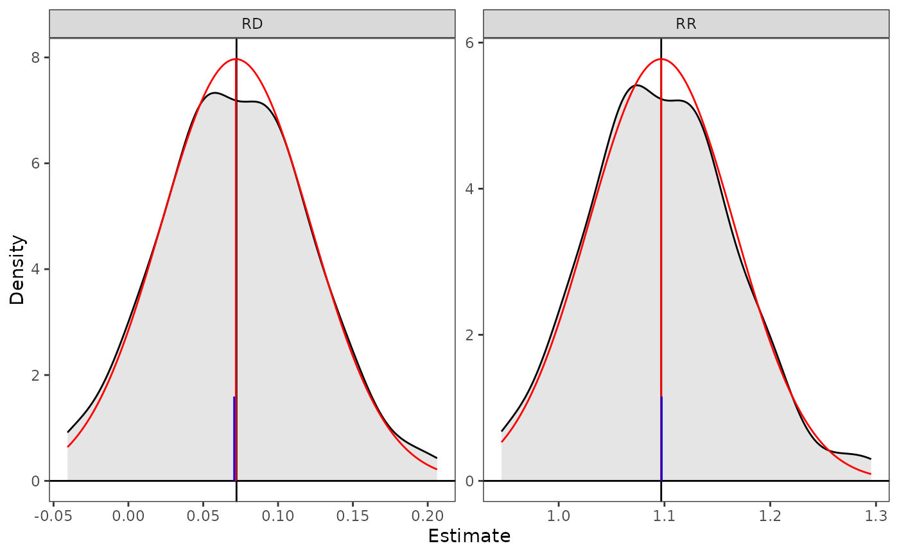
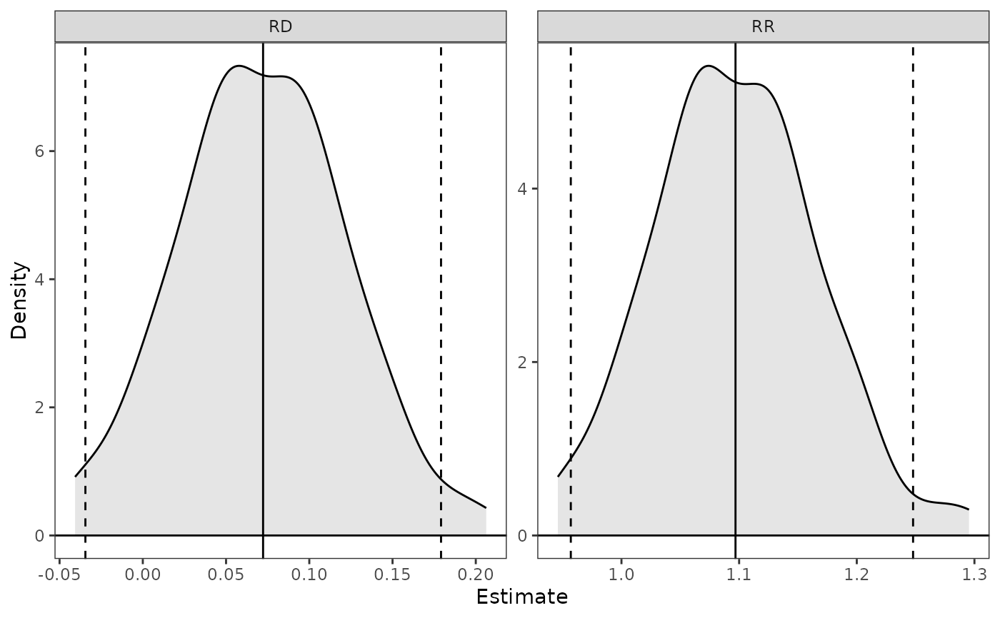

Plotting and inference for clarify_est objects
Source: R/plot.clarify_est.R, R/summary.clarify_est.R
summary.clarify_est.Rdsummary() tabulates the estimates and confidence intervals and (optionally) p-values from a clarify_est object. confint() computes confidence intervals. plot() plots the "posterior" distribution of estimates.
Usage
# S3 method for class 'clarify_est'
plot(
x,
parm,
ci = TRUE,
level = 0.95,
method = "quantile",
reference = FALSE,
ncol = 3L,
simultaneous = FALSE,
...
)
# S3 method for class 'clarify_est'
summary(
object,
parm,
level = 0.95,
method = "quantile",
null = NA,
simultaneous = FALSE,
...
)
# S3 method for class 'clarify_est'
confint(
object,
parm,
level = 0.95,
method = "quantile",
simultaneous = FALSE,
...
)Arguments
- parm
a vector of the names or indices of the estimates to plot. If unspecified, all estimates will be displayed.
- ci
logical; whether to display confidence interval limits for the estimates. Default isTRUE.- level
the confidence level desired. Default is .95 for 95% confidence intervals.
- method
the method used to compute p-values and confidence intervals. Can be
"wald"to use a Normal approximation or"quantile"to use the simulated sampling distribution (default). See Details. Abbreviations allowed.- reference
logical; whether to overlay a normal density reference distribution over the plots. Default isFALSE.- ncol
the number of columns used when wrapping multiple plots; default is 3.
- simultaneous
logical; whether confidence intervals and p-values should be simultaneous or not (i.e., adjusted for multiple comparisons); default isFALSE. See Details.- ...
for
plot(), further arguments passed toggplot2::geom_density().- object, x
a
clarify_estobject; the output of a call tosim_apply()or its wrappers.- null
the values of the parameters under the null hypothesis for the p-value calculations. Should have length equal to the number of quantities estimated, or one, in which case it will be recycled, or it can be a named vector with just the names of quantities for which null values are to be set. Set values to
NAto omit p-values for those quantities. When all values areNA, the default, no p-values are produced.
Value
For summary(), a summary.clarify_est object, which is a matrix containing the coefficient estimates, standard errors, test statistics, p-values, and confidence intervals. Not all columns will be present depending on the arguments supplied to summary().
For confint(), a matrix containing the confidence intervals for the requested quantities.
For plot(), a ggplot object.
Details
summary() uses the estimates computed from the original model as its estimates and uses the simulated parameters for inference only, in line with the recommendations of Rainey (2023).
When method = "wald", the standard deviation of the simulation estimates is used as the standard error, which is used in the z-statistics and the confidence intervals. The p-values and confidence intervals are valid only when the sampling distribution of the resulting statistic is normal (which can be assessed using plot()). When method = "quantile", the confidence interval is calculated using the quantiles of the simulation estimates corresponding to level, and the p-value is calculated as twice the proportion of simulation estimates less than or greater than null, whichever is smaller; this is equivalent to inverting the confidence interval but is only truly valid when the true sampling distribution is only a location shift from the sampling distribution under the null hypothesis and should therefore be interpreted with caution. Using "method = "quantile" (the default) is recommended because the confidence intervals will be valid even if the sampling distribution is not Normally distributed. The precision of the p-values and confidence intervals depends on the number of simulations requested (the value of n supplied to sim()).
When simultaneous = TRUE, confidence intervals and p-values are adjusted to account for multiple comparisons using the "sup-t" confidence region and its inversion. The sup-t confidence region is the smallest rectangular region that ensures simultaneous coverage of all parameters at the desired confidence level. It is found by adjusting the nominal confidence level until a new level is found that, when simultaneously applied to all estimates, yields intervals that contain all estimates with rates equal to the original level. Unlike some other adjustments for multiple comparisons (e.g., Holm, Bonferroni, Benjamini-Hochberg), this method takes into account the joint distribution of the estimates, often yielding narrower regions that are less conservative (but still valid). P-values are found by finding the level of the narrowest band that guarantees simultaneous coverage while containing the null value of the given parameter. When method = "quantile", the Bayesian algorithm described by Montiel Olea and Plagborg-Møller (2019) is used with the simulated estimates; when method = "wald", a new simulation is performed treating the estimates as coming from a multivariate normal distribution.
The plots are produced using ggplot2::geom_density() and can be customized with ggplot2 functions. When reference = TRUE, a reference Normal distribution is produced using the empirical mean and standard deviation of the simulated values. A blue references line is plotted at the median of the simulated values. For Wald-based inference to be valid, the reference distribution should overlap with the empirical distribution, in which case the quantile-based and Wald-based intervals should be similar. For quantile-based inference to be valid, the median of the estimates should overlap with the estimated value; this is a necessary but not sufficient condition, though.
References
Montiel Olea, J. L., & Plagborg-Møller, M. (2019). Simultaneous confidence bands: Theory, implementation, and an application to SVARs. Journal of Applied Econometrics, 34(1), 1–17. doi:10.1002/jae.2656
Rainey, C. (2023). A careful consideration of CLARIFY: Simulation-induced bias in point estimates of quantities of interest. Political Science Research and Methods, 1–10. doi:10.1017/psrm.2023.8
See also
sim_apply()for applying a function to each set of simulated coefficients
Examples
data("lalonde", package = "MatchIt")
fit <- glm(I(re78 > 0) ~ treat + age + race + nodegree + re74,
data = lalonde)
s <- sim(fit, n = 100)
# Compute average marginal means for `treat`
est <- sim_ame(s, var = "treat", verbose = FALSE)
coef(est)
#> E[Y(0)] E[Y(1)]
#> 0.7453346 0.8175754
# Compute average marginal effects on risk difference
# (RD) and risk ratio (RR) scale
est <- transform(est,
RD = `E[Y(1)]` - `E[Y(0)]`,
RR = `E[Y(1)]` / `E[Y(0)]`)
# Compute confidence intervals and p-values,
# using given null values for computing p-values
summary(est, null = c(`RD` = 0, `RR` = 1))
#> Estimate 2.5 % 97.5 % P-value
#> E[Y(0)] 0.7453 0.6947 0.8243 .
#> E[Y(1)] 0.8176 0.7340 0.9035 .
#> RD 0.0722 -0.0345 0.1791 0.16
#> RR 1.0969 0.9569 1.2478 0.16
# Same tests using normal approximation and alternate
# syntax for `null`
summary(est, null = c(NA, NA, 0, 1),
normal = TRUE)
#> Estimate 2.5 % 97.5 % P-value
#> E[Y(0)] 0.7453 0.6947 0.8243 .
#> E[Y(1)] 0.8176 0.7340 0.9035 .
#> RD 0.0722 -0.0345 0.1791 0.16
#> RR 1.0969 0.9569 1.2478 0.16
# Plot the RD and RR with a reference distribution
plot(est, parm = c("RD", "RR"), reference = TRUE,
ci = FALSE)

# Plot the RD and RR with quantile confidence bounds
plot(est, parm = c("RD", "RR"), ci = TRUE)
